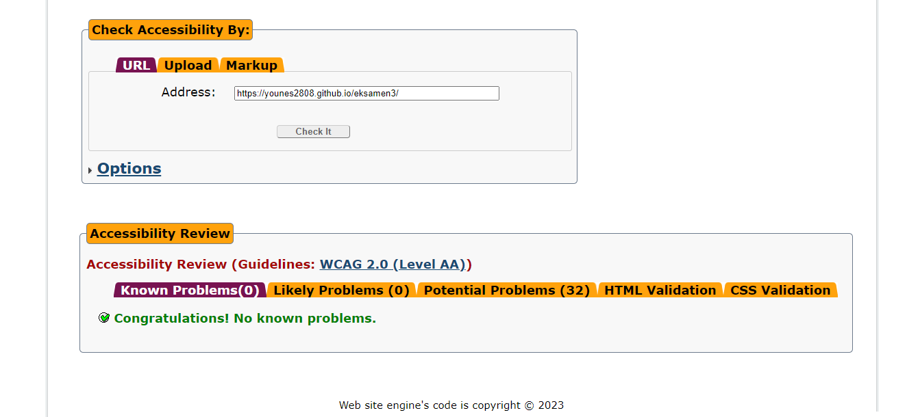
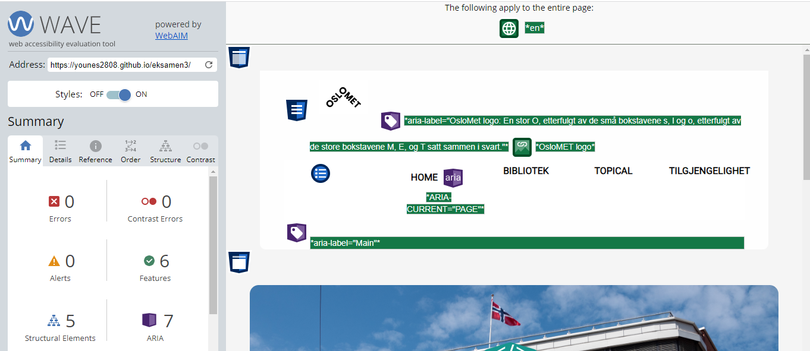
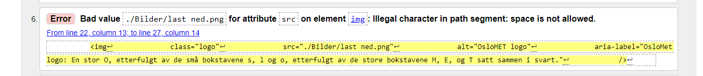
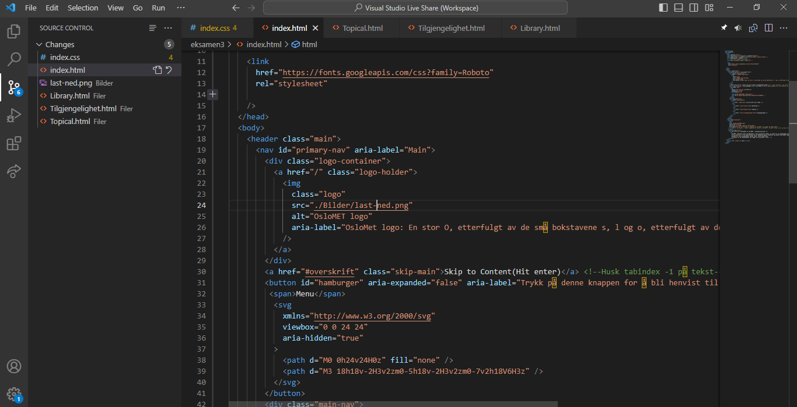

Tilgjengelighetstesting og Kodevalg: En Grundig Gjennomgang
Vi har nøye gjennomført tilgjengelighetstester ved hjelp av AChecker, Wave, og validering av koden på Validator for å sikre at vår nettside overholder de høyeste standardene for tilgjengelighet. Disse testene er av avgjørende betydning for å garantere en positiv brukeropplevelse for alle, uavhengig av funksjonshemninger.
1. AChecker Resultat:
AChecker gir oss et omfattende bilde av tilgjengelighetsproblemer på nettsiden, inkludert aspekter som kontrastforhold og korrekt bruk av ARIA-attributter. Vi har systematisk adressert hver identifiserte utfordring for å sikre full tilgjengelighet på alle deler av nettsiden.
2. WAVE Checker Resultat:
WAVE Checker har vært essensiell for å identifisere og løse tilgjengelighetsproblemer knyttet til vår HTML- og CSS-kode. Vi har forsikret oss om at all tekst er klar og forståelig, at interaktive elementer er tilgjengelige via tastatur, og at kontrastnivået tilfredsstiller kravene for personer med synshemninger.
3. Validator Resultat:
Validator har bekreftet at vår kode er i samsvar med HTML-standarden. Vi har nøye håndtert advarselen om å unngå mellomrom i bildelenker for å sikre en feilfri visning på ulike nettlesere og enheter. Dette reflekterer vårt engasjement for å levere en enhetlig opplevelse for alle brukere.
4. Kode med Feil (Validator Advarsel):
Bildet som viser Validator advarselen illustrerer vårt forpliktende arbeid med å rette opp og forbedre feil. Vi anerkjenner betydningen av en feilfri kodebase for å sikre en sømløs opplevelse for alle besøkende.
Tilgjengelighetshensyn i Designvalgene:
Vår designprosess har vært preget av et sterkt fokus på tilgjengelighet. Vi har implementert flere sentrale tiltak for å sikre at vår nettside er tilgjengelig for alle.
Skip-to-Content Knapp:
For å lette navigasjonen for brukere som er avhengige av tastaturer, har vi inkludert en "Skip to Content" knapp. Dette gir en effektiv snarvei til hovedinnholdet, noe som sparer tid og forbedrer brukeropplevelsen.
ARIAs Rolle Attributter:
Nøye bruk av ARIA rolleattributter, som "main" og "img", gir klare indikasjoner til skjermlesere om strukturen og betydningen av elementene på nettsiden.
Bruk av størrelser:
Vi har valgt tilgjengelige størrelser, som em og rem, med tanke på flere enheter. Dette
sikrer at størrelser er proporsjonale og tilpasses brukerens preferanser og enhetens skjermstørrelse
Gjennom våre designvalg og tilgjengelighetstiltak sikrer vi at nettsiden vår er lett tilgjengelig for alle.